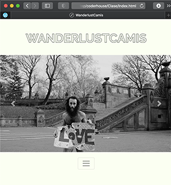
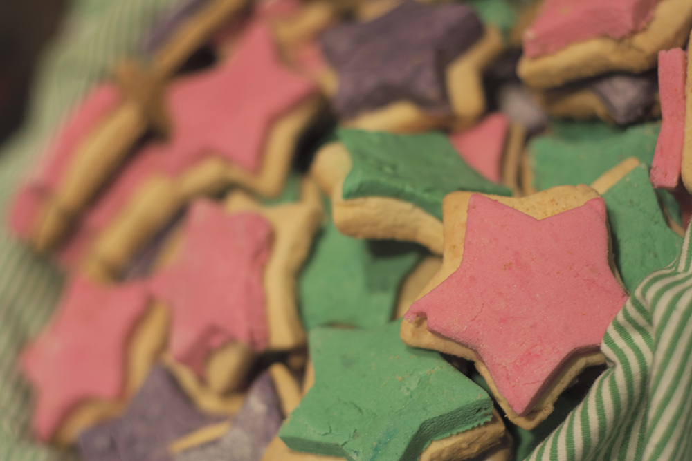

Camila Nunez
Hard worker and fast learner looking for a new horizon.
Exploring a differnet field after 12 years working for the travel industry.
Open to oportunities, easy adaptable to changes and hard team worker.
Projects
Coder House Project
I'm currently working on a web design for my photography collection.
Check out my own Website!Cookie Wookies
As a celiac, I started a business with a Friend manufacturing diferent sweet gluten free pasteries.
Check out Webpage!Work Experience
I have been working on the travel industry for the last 12 years. Starting with my fist job as a Call Taker for Sabre Holdings, moving on after a year to Nexion LLC. The following years I worked as account executive, opened travel agencies in USA and Canada for different markets and different kind of travel agents. I work with all 4 main GDS and had worked for at least 6 years with direct contact with costumers.
Account Speciallis
Nexion LLC - Tavel Leaders Group
Aug 2009 - May 2020
Managed and created Travel agencies, providing agents with their Global distribution service and webpage access under a specific IATA number. Contacted the agents for a warm welcome and follow up.
GDS:
- Sabre
- Amadeus
- Worldspan
- Apollo/Galileo.
Call Taker
Sabre Holdings
Feb 2008 - Jul 2009
I was train by Sabre to use their GDS in order to be able to help travel agents with their reservations and ticketing experience.Used to worked both the phones and the chat lines
Education
CoderHouse
Webdebeloper
HTML - Bootstrap - CSS - SASS
Claeh
Photography Tecnician
Studing diferent areas of photography such as history, lighning, composition, develpoment, both old school and electronic.
Escuela Uruguaya de Fotografia
Photographer
Basic camera usage, basic photography techniques, flash usage. Practiced and worked with models on their books both in studio and street.
Instituto cultural Anglo-Uruguayo
PET KET FCE CAE - Cambridge University Certificates
From when I was a kid, I reinforce my English along with them. I grew up on a bilingual household but needed academic teaching.
Instituto cultural Anglo-Uruguayo
Translation
FCE translation level - Cabridge University.